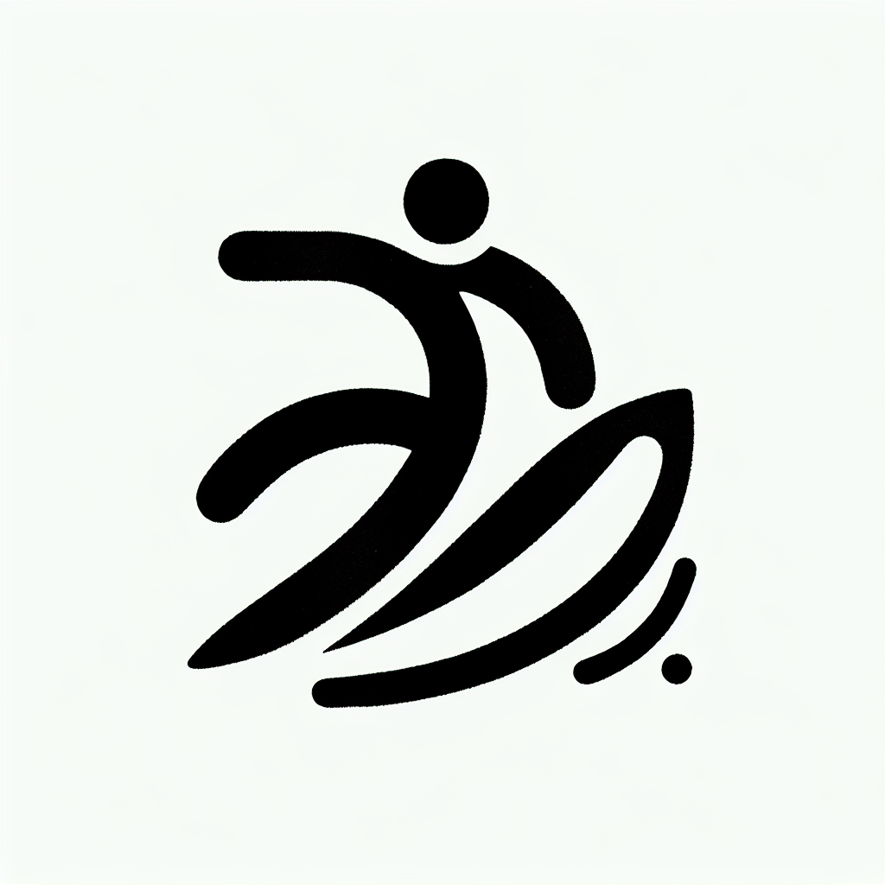

Comment le Lagree améliore vos performances en surf
Comment le Lagree améliore vos performances en surf
Le surf est bien plus qu’un sport ; c’est un art de vivre, surtout ici sur la côte basque. Mais pour dompter les vagues avec aisance, il est essentiel d'adopter une préparation physique solide. Si vous vous êtes déjà demandé comment améliorer vos performances en surf, le Lagree pourrait bien être la réponse que vous cherchez. Cette méthode innovante, proposée au Studio Lagree de DOZ à Anglet, promet de révolutionner votre manière d’aborder les vagues grâce à un entraînement complet, intensif et sans impact.
Un entraînement complet pour renforcer tout le corps
Le surf sollicite de nombreux muscles, du tronc aux jambes, en passant par les bras et les épaules. Une préparation physique adaptée est donc indispensable pour exceller.
- Musculation sans impact: Le Lagree, grâce aux machines MegaPro, offre une méthode de renforcement musculaire qui préserve vos articulations tout en sollicitant vos muscles en profondeur.
- Gainage optimal: Chaque session travaille intensément le core. Un tronc solide est crucial pour la stabilisation sur la planche.
- Résistance et endurance: La pratique régulière du Lagree améliore également votre endurance musculaire, nécessaire pour de longues sessions de surf.
Amélioration de l'équilibre et de la coordination
L'équilibre est une compétence-clé pour tout surfeur cherchant à rester debout sur sa planche. Le Lagree vous aide à développer cette aptitude de manière significative.
- Proprioception: Les exercices sur les machines MegaPro sollicitent votre équilibre et votre coordination motrice.
- Répartition du poids: Apprendre à gérer le poids entre les différents membres lors des entraînements se traduit par une meilleure stabilité sur la vague.
- Réflexes et anticipation: La réactivité est également renforcée, vous permettant d'anticiper les mouvements de l'océan avec plus d'agilité.
Préparation mentale et concentration
Au-delà du physique, le surf demande une forte capacité de concentration et une connexion avec son environnement.
- Focus et discipline: Le Lagree requiert une concentration à chaque exercice, ce qui affine votre capacité à rester focalisé durant toute la durée d'une session de surf.
- Gestion du stress: Les séances intenses vous enseignent à rester calme sous pression, une compétence utile pour affronter des vagues menaçantes.
Le cadre idéal pour une progression continue
Chez DOZ, l'expérience va au-delà de l'entraînement. C’est un espace de vie où l'on combine bien-être physique et plaisir culinaire, propice à une progression continue dans votre parcours sportif.
- Cohérence et soutien: L'équipe de DOZ vous accompagne tout au long de votre progression grâce à des conseils personnalisés.
- Récupération: Après l'effort, détendez-vous autour d'un café de spécialité fraîchement torréfié et de plats sains et locaux qui raviront votre palais.
- Communauté engagée: Rejoignez une communauté de passionnés qui partagent vos valeurs et votre passion pour le surf et le sport bien-être.
La fusion parfaite pour un mode vie 'Healthy & Surf'
Le mariage du Lagree et du surf pourrait être votre meilleur allié pour maximiser vos performances tout en adoptant un mode de vie sain et équilibré. À DOZ, chaque instant est pensé pour être authentique et enrichissant, faisant écho à la philosophie 'Instant Brut'.
Prêt à faire le pas vers une meilleure performance en surf ? Réservez votre cours de Lagree chez DOZ et venez découvrir comment nous pouvons vous aider à réaliser vos objectifs. Après l'effort, prenez le temps de savourer un moment de détente dans notre coffee shop. Embarquez pour une aventure unique et laissez DOZ devenir votre temple du sport et du bien-être.